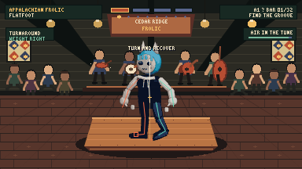
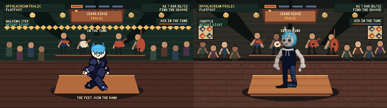

Actual game renderer · 384 × 216
Native camera
Press “Start live review.” Audio will not autoplay.
Candidate art · Candidate Foley · KittyKaki · Flatfoot
Input → simulation—
Input → audio schedule—
Input → action render—
AudioContext base / output—
No autoplay · isolated and mixed audition
Shoe-on-board bench
Foot bus
0
Foot + music
0
Choose a sample. Nothing plays automatically.
- Candidate source
- CC0 real shoes on wood/parquet
- Runtime bus
- 100 Hz source HPF; 70 Hz bus HPF; gentle transient control
- Approval
- Not inferred from signal QA
Normal, slow, contact, and A/B evidence
Movement rack


Stop gate
Automation can reject this candidate. It cannot approve it.
Review anatomy, weight, musicality, shoe timbre, immediate response, and stage contrast. Buck, Clog, broader stage work, and deployment remain stopped.
Open source and provenance manifest